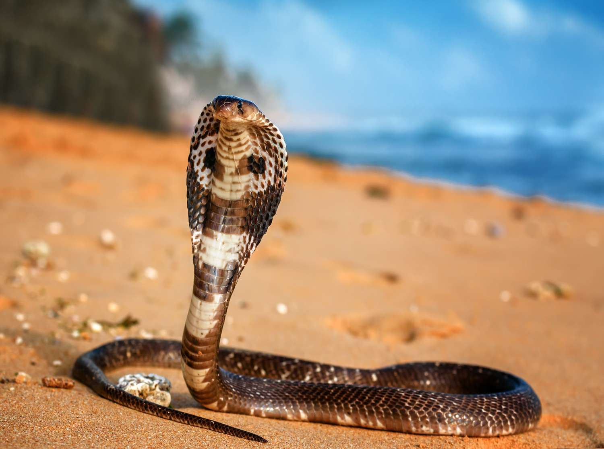

Habitat & Geography
- They tend to live in areas like India, China, and mostly in areas like southeast Asia. Their habitats are like bamboo areas and rainforests usually.

The status of the King Cobra is vulunrable to extinction. The King Corba is the deadliest snake in the world and known for being venomous. The King Cobra is averagely about 10-12 feet, also known as 3-3.6 meters. It can reach up to 18 feet also known as 5.4 meters making it one of the longest venomous snakes. The king cobra can live up to nearly 20 years in the wild, as an adult, they're green, yellow, brown or black with a white stomach area.
| Scientific classification | |
|---|---|
| Kingdom: | Animalia |
| Subphylum: | Chordata |
| Class: | Reptilia |
| Subclass: | Animalia |
| Order: | Squamata |
| Suborder: | Serpentes |
| Family: | Elapidae |
| Genus: | Ophiophagus |
| Species: | O. hannah |